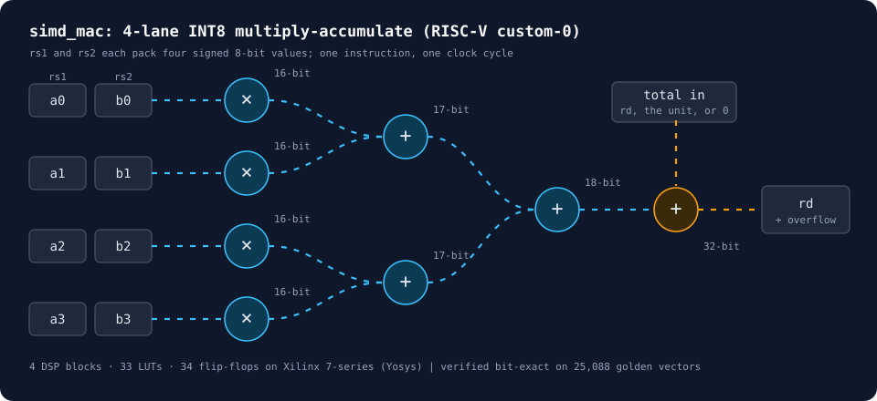

A neural network that runs on 8-bit integers
Draw a digit. This page recognises it twice: once with ordinary floating-point math, and once using only 8-bit integers, the way a small microcontroller without a floating-point unit would. The integer version gives exactly the same results as the project's C++ engine, which is what the custom RISC-V hardware is built to speed up.
Draw one digit, large, in the middle of the box.
Waiting for a drawing.
Floating point (32-bit) Integers only (8-bit)
What happens to your drawing
Each step below updates live as you draw.
-
The drawing becomes 28 × 28 pixels
The network was trained on MNIST, a set of 70,000 handwritten digits, each 28 pixels square. Your drawing is cropped, scaled and centred the same way.
-
Each pixel becomes a signed byte
A pixel's brightness, 0 to 255, is stored as brightness − 128, a number from −128 to 127 that fits in 8 bits. Here is the middle row of your image as the chip would hold it:
-
128 neurons multiply and add
Each neuron multiplies all 784 bytes by its own 784 learned weights and adds them up: 100,352 multiplications for this layer alone. Integer results are scaled back into 8 bits with an integer multiply and shift. Bright squares are neurons that respond to your drawing.
Point at a square to see its value.
-
Ten scores, one answer
A second layer turns the 128 neuron values into one score per digit. The highest score wins. These are the 8-bit scores the integer network produced:
How few bits can a weight have?
Storing weights in 8 bits instead of 32 makes the model four times smaller (102 KB instead of 407 KB) and lets a small chip use cheap integer arithmetic. Push it further and the network eventually stops working. Try it on your drawing:
This experiment rounds the weights only and keeps the rest in floating point.
The hardware: four multiplications per instruction
Almost all the work in step 3 is multiply-and-add. A plain 32-bit RISC-V core multiplies one pair of numbers per instruction, but four 8-bit values fit in one 32-bit register. So I designed a unit, in Verilog, that multiplies four pairs at once and adds them to a running total in a single instruction, using an opcode RISC-V reserves for custom extensions.

- Verified
- 25,088 test instructions from a real MNIST image, 0 mismatches between the Verilog and the software model
- Size on an FPGA
- 4 DSP blocks, 33 lookup tables and 34 flip-flops on a Xilinx 7-series chip
- Still to measure
- The speed-up in clock cycles, by running the network on a RISC-V simulator with and without the new instruction
Results so far
| Version | Accuracy |
|---|---|
| Floating point (32-bit) | 98.23% |
| 8-bit weights, floating-point activations | 98.23% |
| Integers only, end to end | 98.21% |
The two versions pick the same digit on 99.84% of test images. The integer pipeline in this page reproduces the C++ engine byte for byte on all 10,000 of them.
Project status
- DoneINT8 engine, calibration and test-set evaluation
- DoneFour-way multiply-accumulate unit in Verilog, synthesised and verified
- NextCycle counts on a RISC-V simulator, with and without the custom instruction
- LaterThe unit attached to a real RISC-V core (PicoRV32), and a short technical report